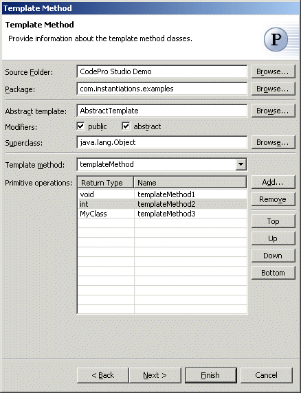
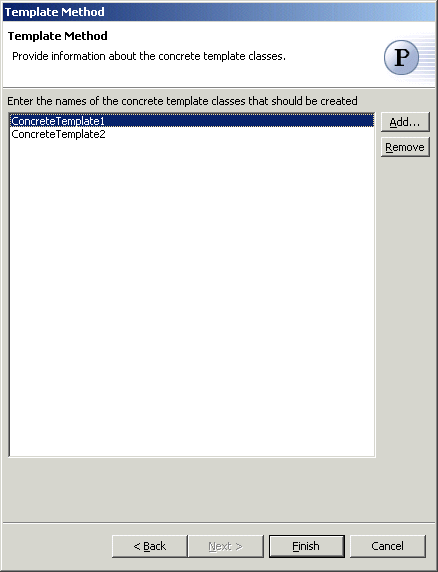

Template Method Pattern
The  Template Method Pattern defines the skeleton of an algorithm in an
operation, deferring some steps to subclasses. Template Method lets
subclasses redefine certain steps of an algorithm without changing the
algorithm's structure.
Template Method Pattern defines the skeleton of an algorithm in an
operation, deferring some steps to subclasses. Template Method lets
subclasses redefine certain steps of an algorithm without changing the
algorithm's structure.
Wizard

| Option | Description | Default |
| Source folder | Enter a source folder for the new class. Either type a valid source folder path or click Browse to select a source folder via a dialog. | The source folder of the element that was selected when the wizard was started. |
| Package | Enter a package to contain the new class. Either type a valid package name or click Browse to select a package via a dialog. | The package of the element that was selected when the wizard has been started. |
| Abstract template | Type or click Browse to select an abstract template class. | <AbstractTemplate> |
| Modifiers | Select one or more access modifiers for the new class.
|
public |
| Superclass | Type or click Browse to select a superclass for this class. | <java.lang.Object> |
| Template method | Type or select the name of the method that will define the order of the primitive operations | <templateMethod> |
| Primitive operations | Click Add to enter return types and names of primitive operations that should be created in the template classes | <blank> |

| Option | Description | Default |
| Concrete template classes | Click Add to enter names of the concrete template classes that should be created. | <blank> |
Applicability
Use the Template Method pattern should be used
- to implement the invariant parts of an algorithm once and leave it up to subclasses to implement the behavior that can vary.
- when common behavior among subclasses should be factored and localized in a common class to avoid code duplication.
- to control subclasses extensions. You can define a template method that calls "hook" operations (see Consequences) at specific points, thereby permitting extensions only at those points.
Additional Resources
http://c2.com/cgi/wiki?TemplateMethodPattern
http://www.wikipedia.org/wiki/Template_method_pattern
http://www.cmcrossroads.com/bradapp/javapats.html#TemplateMethod